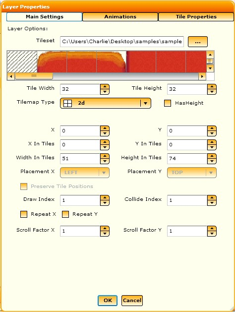
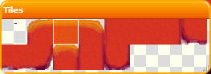
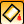
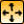
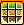
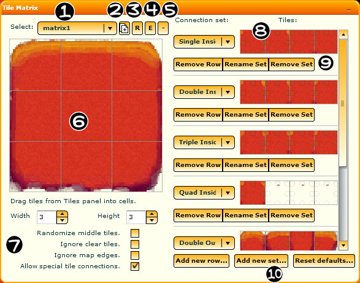
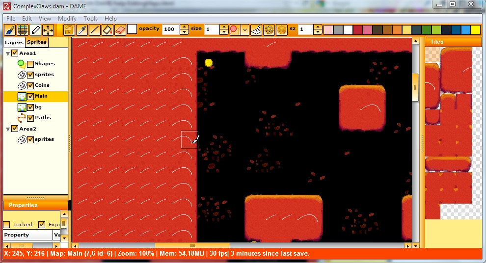
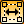

When this is selected any tiles you select will be highlighted differently. They will become part of the matrix without those tiles on the map being replaced by the tiles in the matrix.
When this is selected any tiles you select will be highlighted differently. They will become part of the matrix without those tiles on the map being replaced by the tiles in the matrix.Dame provides many features to make editing a level/map for your game easier. Click on the links to learn more about each feature:
To begin with make sure that you have a map layer in your project. Select the layers tab on the left side of the editor and right click on either a group or an empty space in the panel. You can either add a new group containing a map or add a map to an existing group. Once you have added a map you will be presented with this window:
For a tilemap to work you will need a tilemap image, also known as a spritesheet, which can consist of tiles in a single row or multiple rows. You can either import an existing image by clicking on the "..." button or you can create a new image and edit it in the editor (you will be given an option for this if you press OK without specifying a source image). DAME will try to guess the size of any imported image but you can change the tile width and tile height yourself by tweaking the values in the controls. You also have options to specify the position of the map in the world and its dimensions in tile units. (You have the option to edit the layer properties later on if you wish by selecting the option "Edit Layer Info" when you right click on a map layer in the layers panel.)
With DAME you will be able to see a preview of each tile in the tilemap at the top of the window, updated in real-time whenever you change any values. You should see on the first tile a representation of the 'shape' of the tile.
Once you have clicked OK you should find the map in the layers panel. Make sure to left click on it to make it the active layer so that you will be ready to edit it. If you wish you can import existing tilemap data in comma separated values (CSV) format. Do this by right-clicking on the map in the layers panel and selecting "Import Map Data".
With the map layer selected click on the paint brush icon on the DAME toolbar. This will allow you to paint on the tilemap.
In order to paint you must first familiarise yourself with the tiles tool window. This will pop up whenever you have a map layer selected. You can resize the window by dragging it on the bottom right, and double click the title bar to minimise and restore its size:
Left clicking on a tile in the window will make it the active tile. Right clicking will bring up the menu with options to zoom in and out, copy, insert and delete tiles and to view the raw image data. For now just select the tile you wish and hold down the left mouse button to paint that tile somewhere within the valid region of the map. You can identify the valid map area by looking for the border around the map. If you get lost press Ctrl-G or go to the main menu and select View->Center Layer to refocus the view to the center of the map.
It is also possible to block fill contiguous areas with one tile. To do this just select the paint bucket icon on the toolbar and the click on a tile for it, and all its neighbouring tiles of the same type, to automatically be changed to the selected tile in the tiles window.
There are two ways to erase a tile. As erasing a tile just sets the tile index to 0 you can select tile 0 and paint that down, otherwise you can hold down the right mouse button and paint on the map to erase, regardless of the currently selected tile. Note that if you set the draw index of the layer to 0 then tile 0 will actually be drawn. By default it is 1. To change this you can right click on the layer and edit the info.
With the map layer selected click on the selection icon on the DAME toolbar.
Now left clicking on the map will allow you to select areas. You can click on individual tiles or drag a box to select every tile that falls within the box. Ctrl-click to select add to/delete from the current selection and Shift-click to add to the selection. The selected areas will be outlined by selection boxes.
Hold your left mouse button over any selected area and move the mouse to move the selection. Until you change your selection it will remember any tiles when you move the selected area over them, allowing you to freely move it wherever you want.
You can also copy and paste any tile selection, even onto other layers that use different tile maps!
An alternative method of selection is to use the magic wand. Clicking on the wand icon on the toolbar and then on any tile in the map will automatically select every contiguous tile of the same type.
The tile matrix allows you to automatically paint blocks of tiles in one go, correctly accounting for edges and inside tiles. It works by looking at the relationship between tiles you are painting in the new matrix on your map and their neighbours, finding the best match to the tiles in the matrix.
First click on the tile matrix icon with a map layer selected. This should now bring up the tile matrix window, shown below.
If you're creating a new project it will initially be empty, so on the tiles window left click and drag a tile from it into a box within the tile matrix. Repeat for all the tiles you wish, also making sure that it fits the correct dimensions. Note that you can also drag tiles from one box in the tile matrix window to another.
Now, go onto the map and begin to paint. DAME will calculate the correct tile to place down based on the neighbouring tiles you've placed down during this session of using the tile matrix. Left click-dragging will generate a box and right clicking will erase individual tiles from the matrix, but not from the map itself. To confirm the matrix just click on the green tick button on the toolbar. To cancel the matrix click on the red cross button, change layers or go out of tile matrix mode. Note that nothing will be confirmed until you click on the green tick. You should find that it is possible to create some simple map layouts with little effort and without the need to change tiles over and over again:
One final tool is the ability to join new matrices with existing tiles using the matrix magnet, selected from the toolbar: When this is selected any tiles you select will be highlighted differently. They will become part of the matrix without those tiles on the map being replaced by the tiles in the matrix.
It is also possible to edit the tilemap image from within DAME itself. The advantage of this is that you can easily generate seamless tiles and add tiles as you need without the need to switch to a paint package again and again. While this isn't intended as a replacement to conventional paint programs, it should allow you to do quick editing on the images and visualise the results immediately. First click on the draw icon while you have a tilemap selected. Then to start with just draw anywhere on a tile on a map. You should see the results reflected immediately on this and any other map that uses this tilemap image:
DAME provides some basic drawing tools:
|
Right clicking on a tile in drawing mode will bring up a context menu. You can lock the current tile under the cursor so that any drawing will only happen on the current locked tile, preventing you from accidentally drawing on a neighbouring tile. You can also insert new tiles quickly from there.
There are two ways to move and resize maps. The first is to edit them in the layer properties. The second is to manipulate them in real time. With the tilemap selected and in editing mode click on the Move/Resize Maps icon: . Bars should appear around the edges and the corner of the map. If you click on any of the bars you will be able to drag the edge of the tilemap around, allowing you to either grow or shrink the map as you wish. If you click and drag within the map itself you can move the map around. Finally, if you have Snap To Grid enabled, when you move the map around it will move so that it will be aligned with the tile units at its original location.
Note that with version 2 of DAME and above you can also select a group and move the entire group in real-time.
Select View Raw Image Data to view the actual tilemap image and resize it as you wish. You also have the option to save it there too (Note that saving the project will save any changes you have made to the tilemap anyway).
Underneath the layers panel there is a tickbox for "Has Hits". This does nothing internally but is useful when exporting.